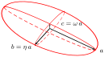
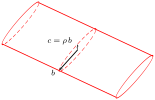
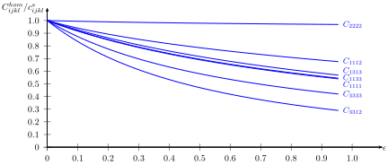

Compliance and Hill polarization tensor of a crack in an anisotropic matrix
![]()
This work aims at developing an efficient method to compute the compliance due to a crack modeled as a flat ellipsoid of any shape in an infinite elastic matrix of arbitrary anisotropy (Eshelby problem) when no closed-form solution seems currently available. Whereas the solution of this problem usually requires the calculation of the so-called fourth-order Hill polarization tensor if the ellipsoid is not singular, it is shown that the crack compliance can be derived from the first-order term in the Taylor expansion of the Hill tensor with respect to the smallest aspect ratio of the ellipsoidal inclusion. For a 3D ellipsoidal crack model, this first-order term is expressed as a simple integral thanks to the Cauchy residue theorem. A similar method allows to express the same term in the case of a cylindrical crack model without any integral. A numerical example is finally treated.
flat ellipsoidal inclusion, aspect ratio, anisotropy, Hill polarization tensor, Eshelby problem
Author-accepted manuscript (postprint). This is the accepted version of an article published by Elsevier in the International Journal of Solids and Structures. The version of record is available at doi:10.1016/j.ijsolstr.2009.08.003. Please cite as: J.-F. Barthélémy, “Compliance and Hill polarization tensor of a crack in an anisotropic matrix”, International Journal of Solids and Structures 46(22–23) (2009) 4064–4072. © 2009 Elsevier Ltd.
This author-accepted manuscript is made available under the Creative Commons Attribution-NonCommercial-NoDerivatives 4.0 International (CC BY-NC-ND 4.0) license. 
1 Introduction
The presence of cracks at any scale of a continuous medium can considerably affect the physical properties of the latter, for instance the permeability, the thermal or electrical conductivities or the mechanical properties on which this paper focuses more particularly. The determination of the macroscopic behavior of a cracked medium has been a topic of great interest in the last decades. In order to satisfy the basic assumptions of scale separation allowing to implement an homogenization method, two types of fracture networks are often considered: the case of a dense network of large joints cross-cutting the r.v.e. (representative volume element) [1] or the case of micro-cracks much smaller than the size of the r.v.e.. The present paper deals with the calculation of the mechanical effect of this second type of cracks. An abundant literature is devoted to the modeling of a medium with pervasive micro-cracks considering various characteristics of the latter, whether they are open or closed nonfrictional ([2], [3], [4], [5], [6]), frictional ([7], [8], [9]), dilatant ([10], [11]), propagating ([12], [13], [14], [15]), dry or fluid filled ([16], [17]) or combining several characteristics in the cited papers and many others.\ It has been shown that, in the elastic framework, the contribution to the overall behavior of any crack family in an elastic solid phase simply arises as an additional compliance ([3], [18]). This is also the case for frictional cracks in an incremental formulation ([10], [11]). The determination of this additional compliance can be obtained by homogenization methods allowing to estimate the relative displacement of the crack lips when the r.v.e. is loaded. Many of them are based on the solution of the auxiliary problem of a single open crack embedded in an infinite matrix with boundary conditions defined either on the crack lips or by a remote strain or stress state. Closed-form solutions of this problem can be obtained by the theory of fracture mechanics under the assumption of isotropy of the matrix ([19], [20], [21]). Alternatively, the Eshelby problem [22] considering a flat ellipsoidal inclusion as a crack representation in an infinite elastic matrix also provides the strain state i.e. the displacement jump across the crack lips ([23], [24], [20]).\ In the Eshelby problem, the strain state is uniform within the ellipsoidal inclusion whatever its aspect ratios. The concentration tensor which relates the inclusion strain tensor to the remote boundary condition (stress or strain tensor) writes by means of the fourth-order Hill polarization tensor ([25], [26]). The latter only depends on the shape of the inclusion and on the stiffness of the surrounding matrix and writes as a double integral ([27], [24]). Only some special cases of matrix anisotropy and inclusion shape allow to derive closed-form expressions of this tensor ([24], [28], [29], [30]). For a fully anisotropic matrix and any ellipsoidal shape of the inclusion, it is necessary to resort to a numerical evaluation of the double integral ([31], [32], [33], [34]). After recalling several cubature methods already used by other authors, [35] presents a new complete procedure to speed up the calculation thanks to the Cauchy theory of residues allowing to reduce the double integral to a single one. This theorem has also been recently applied in [36] for a prolate inclusion and in [37] for a \(2D\) crack in an orthotropic matrix.\ The case of an open flat inclusion is slightly different because the combination of a geometrical singularity (flat domain) with a physical singularity (infinite compliance) induces large strain in the vicinity of the crack. Consequently, the problem should be considered in an incremental form. Besides, the additional macroscopic compliance due to the cracks can be explicitely obtained for simple cases of material symmetries ([38], [39], [20]) but not for the general anisotropic case. This paper presents a method allowing to numerically compute this additional compliance in the full anisotropic case. The computation requires a Taylor expansion of the Hill tensor up to the first order with respect to the aspect ratio. A procedure similar to that of [35] is implemented to compute the first order of this expansion also appearing as a double integral [40]. The solution of [37] in \(2D\) is retrieved and extended to the full anisotropic \(3D\) case. A r.v.e. containing two crack families is finally considered and numerical computations are presented.
2 Macroscopic crack compliance
2.1 Definition of the macroscopic crack compliance in a r.v.e.
Consider a r.v.e. \(\Omega\) made up with a matrix phase occupying the domain \(\Os\) and \(N\) families of cracks. The \(i^{\mathrm{th}}\) family (domain \(\Oi\)) contains a large number of cracks which are similar up to a translation. This means that a family gathers cracks having the same shape and orientation. As regards the shape, cracks constitute degenerate geometrical objects since one dimension is very small compared to the others. They can therefore be modeled either as surfaces allowing displacement discontinuities or as three-dimensional objects. This last point of view allows to treat cracks as any volume inclusion and thus to define their volume fraction \(f_i\), which can be considered as infinitesimal. More precisely it writes as the product of a finite density and the infinitesimal ratio between the aperture (smallest dimension) and the characteristic length of the crack surface.\ Whatever the conditions applied on the r.v.e. boundary, either uniform stress or strain rate condition [26], the consistency rules imply the following relationships between the macroscopic and microscopic stress and strain rates:
\[ \wideeq{\dot{\Sig}=\moydom{\dot{\sig}}{\Omega}= \dep{1-\sum_{i=1}^N f_i}\moydom{\dot{\sig}}{\Os}+\sum_{i=1}^N f_i\moydom{\dot{\sig}}{\Oi}} \tag{1}\]
\[ \wideeq{\D=\moydom{\dd}{\Omega}= \dep{1-\sum_{i=1}^N f_i}\moydom{\dd}{\Os}+\sum_{i=1}^N f_i\moydom{\dd}{\Oi}} \tag{2}\]
where \(\moydom{\cdot}{\Oa}\) denotes the volume average over the domain \(\Oa\). Since the stress rate is zero within the crack domain (or at least bounded if the crack is not open) and the volume fractions \(f_i\) are infinitesimal, the macroscopic stress rate Eq. 1 becomes:
\[ \wideeq{\dot{\Sig}=\moydom{\dot{\sig}}{\Os}} \tag{3}\]
The macroscopic strain rate Eq. 2 is composed of the solid phase contributions and the crack ones. The latter can not be neglected because, despite the infinitesimal character of the volume fractions, some components of \(\moydom{\dd}{\Oi}\) are expected to tend towards infinity, so that the product \(f_i\moydom{\dd}{\Oi}\) tends towards finite values. Moreover, the linearity of all equations at stake in the elasticity problem implies that this product can be linearly related to the macroscopic stress rate:
\[ \wideeq{f_i\moydom{\dd}{\Oi}=\so^i:\dot{\Sig}} \tag{4}\]
The tensor \(\so^i\) appearing in Eq. 4 is called the crack compliance but there should not be any confusion with the compliance that could be confered to the material occupying the crack domain. For instance, in the case of an open empty crack, the compliance within the crack is infinite whereas \(\so^i\) is finite and depends on the surrounding material. Finally, the combination of Eq. 2, Eq. 3, Eq. 4 and the constitutive law of the matrix of compliance \(\sos\) allows to get the additive decomposition of the macroscopic compliance ([3], [18]):
\[ \wideeq{\D=\Shom:\dot{\Sig} \quad\textrm{with}\quad \Shom=\sos+\sum_{i=1}^N \so^i} \tag{5}\]
The aim of any homogenization scheme will then consist in providing estimates or even bounds for the tensors \(\so^i\) [26]. As the following developments will concern each crack family separately, the reference to the index \(i\) will be omitted.
2.2 Eshelby problem
Some schemes are based on the solution of the Eshelby problem [22]. The latter consists of an ellipsoidal inclusion embedded in an infinite reference medium of stiffness \(\cc\) submitted to a stress rate \(\dot{\Sig}^{\infty}\) as a remote boundary condition. The strain and stress rates are shown to be uniform in the inclusion. Considering an auxiliary Eshelby problem for each phase composing the actual r.v.e., those uniform tensors can eventually be used as estimates of the strain or stress rate averages in the r.v.e. provided that the reference medium stiffness \(\cc\) be adequately chosen with respect to the microstructure [26]. The relationship between \(\dot{\Sig}^{\infty}\) and the stress rate applied on the r.v.e. \(\dot{\Sig}\) is determined by Eq. 3, in which the average over the solid phase is also estimated by an auxiliary problem.\ The crack is represented by a flat ellipsoid. Many studies are based upon the assumption of a circular shape in the crack plane (flat spheroid in \(3D\)) for mathematical convenience. However, to take into account anisotropic crack extensions, an ellipse should be more realistic, as proved by stereological studies [41], and would still be convenient for the method developed hereafter. The ellipsoid radii are denoted by \(a\), \(b\), \(c\) with \(a\geq b\gg c\) and the following aspect ratios are introduced:
\[ \wideeq{\omega=\frac{c}{a}\ll 1 \quad;\quad \eta=\frac{b}{a} \quad;\quad \rho=\frac{c}{b}=\frac{\omega}{\eta}} \tag{6}\]
The general crack model requires here that \(\omega\ll 1\) but two cases can be considered depending on the order of magnitude of \(\eta\). On the one hand, the model corresponds to a \(3D\) ellipsoidal crack if \(\eta\) remains of the order of magnitude of \(1\), which means that \(\omega\) is still the aspect ratio governing the crack aperture (see Fig. 1 (a)). On the other hand, it corresponds to a cylindrical crack if \(\eta\ll 1\) (see Fig. 1 (b)). It can also be interpreted as a \(2D\) crack model in the plane perpendicular to the axis of the cylinder. The crack aperture is then controled by the aspect ratio \(\rho\).


- ellipsoidal crack; (b) cylindrical crack.
The orientation is characterized by an orthogonal frame of \(\R^3\), including the normal \(\n\) of the crack plane and the major \(\vl\) and minor \(\m\) axes in the plane such that the equation of the ellipsoid writes:
\[ \wideeq{\norm{\uu{\mathcal{A}}^{-1}\prodc\x}\leq 1 \quad\textrm{with}\quad \left\{ \begin{array}{ll} \uu{\mathcal{A}}^{-1}=\frac{1}{a}\,\dep{\vl\otimes\vl+ \frac{1}{\eta}\,\m\otimes\m+ \frac{1}{\omega}\,\n\otimes\n}&\textrm{3D crack}\\ \uu{\mathcal{A}}^{-1}\to\frac{1}{b}\,\dep{\m\otimes\m+\frac{1}{\rho}\,\n\otimes\n} &\textrm{cylindrical crack} \end{array} \right.} \tag{7}\]
The general solution of the strain rate within the ellipsoidal inclusion embedded in an infinite medium of stiffness \(\cc\) writes [26]:
\[ \wideeq{\dd=\inv{\uuuu{\Lambda}}:\dot{\Sig}^{\infty} \quad\textrm{with}\quad \uuuu{\Lambda}=\cc-\cc:\tensP:\cc} \tag{8}\]
where the so-called Hill polarization tensor \(\tensP\) only depends on \(\cc\) and \(\mathcal{A}\). This tensor can be expressed using the Green function of the infinite medium [26] or by means of an integral over the unit sphere at the end of a reasoning involving the Fourier transform of the Green function. In fact, two such integral expressions can be written, one being deduced from the other by a simple change of variable [24]:
\[ \wideeq{\tensP=\frac{\det{\uu{\mathcal{A}}}}{4\,\pi} \int_{\norm{\uv{\xi}}=1} \frac{\uuuu{\Gamma}(\uv{\xi})} {\norm{\uu{\mathcal{A}}\prodc\uv{\xi}}^3} \,\ud S_{\xi} = \frac{1}{4\,\pi} \int_{\norm{\uv{\zeta}}=1} \uuuu{\Gamma}(\inv{\uu{\mathcal{A}}}\prodc\uv{\zeta}) \,\ud S_{\zeta}} \tag{9}\]
with the operator
\[ \wideeq{\uuuu{\Gamma}(\uv{\xi})= \uv{\xi}\sotimes\inv{\uu{K}}\sotimes\uv{\xi} \quad\textrm{with}\quad \uu{K}(\uv{\xi})=\uv{\xi}\prodc\cc\prodc\uv{\xi}} \tag{10}\]
It is worth noting that the operator \(\uuuu{\Gamma}\) is homogeneous of degree \(0\), which means \(\uuuu{\Gamma}(\lambda\uv{\xi})=\uuuu{\Gamma}(\uv{\xi})\) for all \(\lambda\neq 0\). Furthermore, it comes from Eq. 7 that \(\lim_{\omega,\rho\to 0}\uuuu{\Gamma}(\inv{\uu{\mathcal{A}}}\prodc\uv{\zeta}) =\uuuu{\Gamma}(\n)\) (\(\omega\) or \(\rho\) applies for respectively \(3D\) and cylindrical crack models) and therefore, using the second expression of \(\tensP\) in Eq. 9, that \(\lim_{\omega,\rho\to 0}\tensP=\uuuu{\Gamma}(\n)\). Introducing this limit in Eq. 8, it follows that:
\[ \wideeq{\lim_{\omega,\rho\to 0} \uuuu{\Lambda}=\uuuu{\Lambda}_o =\cc-\cc:\uuuu{\Gamma}(\n):\cc =\cc-\dep{\cc\prodc\n}\prodc\inv{\dep{\n\prodc\cc\prodc\n}}\prodc \dep{\n\prodc\cc}} \tag{11}\]
The operator \(\uuuu{\Lambda}_o\) in Eq. 11 is obviously singular and its kernel is given by:
\[ \wideeq{\ker{\uuuu{\Lambda}_o} =\textrm{span}\dep{\n\sotimes\vl,\,\n\sotimes\m,\,\n\otimes\n}} \tag{12}\]
The singularity of \(\uuuu{\Lambda}_o\) implies that some components of \(\dd\) in Eq. 8 tend towards infinite values. Nevertheless, as already stated in particular cases by some authors ([38], [20], [6]), the relevant quantity that could be used to build the estimate Eq. 4 (up to a density factor) is not \(\dd\) but the product \(\omega\dd\) (\(\rho\dd\) for a cylindrical crack) and thus the following limit
\[ \wideeq{\lim_{\omega\to 0}\omega\dd=\uuuu{H}:\dot{\Sig}^{\infty} \quad\textrm{where}\quad \uuuu{H}=\lim_{\omega\to 0}\omega\inv{\uuuu{\Lambda}} =\lim_{\omega\to 0}\omega\inv{\dep{\cc-\cc:\tensP:\cc}}} \tag{13}\]
where \(\omega\) is replaced by \(\rho\) for a cylindrical crack. Another point of view could be to observe that \(\omega\dd\) (resp. \(\rho\dd\)) can be related to the average velocity jump between the crack lips if the crack is represented by a discontinuity surface \(\mathcal{S}\) (resp. line \(\mathcal{L}\) in a plane perpendicular to a cylindrical crack). Indeed, thanks to the theory of distributions, the consistency between the volume and the discontinuity surface models allows to write locally the contribution of the strain rate of the crack as:
\[ \wideeq{\dd=\saut{\uv{u}}\sotimes\n\,\delta_{\mathcal{S}} \quad\textrm{(3D)} \quad;\quad \dd=\saut{\uv{u}}\sotimes\n\,\delta_{\mathcal{L}} \quad\textrm{(2D)}} \tag{14}\]
where \(\delta_{\mathcal{S}}\) (resp. \(\delta_{\mathcal{L}}\)) denotes the surface (resp. line) Dirac distribution over \(\mathcal{S}\) (resp. \(\mathcal{L}\)) and \(\saut{\uv{u}}\) the velocity jump. Recalling that, in the Eshelby problem, the strain rate is uniform within the ellipsoid, the integration of Eq. 14 finally gives:
\[ \wideeq{\omega\,\dd=\frac{3}{4\,a\,\eta}\, \frac{\int_{\mathcal{S}}\saut{\uv{u}}\ud S}{\pi\,a^2}\sotimes\n \quad\textrm{(3D)} \quad;\quad \rho\,\dd=\frac{2}{\pi\,b}\, \frac{\int_{\mathcal{L}}\saut{\uv{u}}\ud l}{2\,b}\sotimes\n \quad\textrm{(2D)}} \tag{15}\]
The tensor \(\uuuu{H}\) in Eq. 13 can be given the status of crack compliance in the Eshelby problem.
2.3 Computation of the crack compliance in the Eshelby problem
This paragraph aims at presenting a method allowing the effective computation of the tensor \(\uuuu{H}\) Eq. 13 in the anisotropic case i.e., when closed-form expressions can not be easily obtained. The following developments will be done in the context of a \(3D\) crack but they can apply to a \(2D\) crack by replacing \(\omega\) by \(\rho\). The procedure starts from the Taylor expansion of \(\tensP\) Eq. 9 with respect to the aspect ratio:
\[ \wideeq{\tensP=\uuuu{\Gamma}(\n)-\omega\,\uuuu{\Pi}+\petito{\omega}} \tag{16}\]
The determination of the tensor \(\uuuu{\Pi}\) will be the object of the next section. The present paragraph focuses on its role in the calculation of \(\uuuu{H}\). Inserting Eq. 16 in Eq. 13 allows to write:
\[ \wideeq{\uuuu{H}=\lim_{\omega\to 0}\omega\,\inv{(\uuuu{\Lambda}_o+\omega\, \uuuu{\Lambda}_1)} \quad\textrm{with}\quad \uuuu{\Lambda}_1=\cc:\uuuu{\Pi}:\cc} \tag{17}\]
The limit Eq. 17 can now be calculated by a block matrix reasoning. First, it is recalled that the vector space of symmetric second-order tensors is spanned by the basis composed of the six tensors:
\[ \wideeq{{\mathcal{B}}=(\vl\otimes\vl,\,\m\otimes\m,\,\sqrt{2}\,\vl\sotimes\m, \,\sqrt{2}\,\n\sotimes\vl,\,\sqrt{2}\,\n\sotimes\m,\,\n\otimes\n)} \tag{18}\]
Consequently, any fourth-order tensor having the minor symmetries and thus seen as an operator acting on symmetric second-order tensors can be represented by a square matrix of \(\R^6\) in this basis. Furthermore, this matrix can be decomposed in four square block matrices of \(\R^3\) according to the order in which the six tensors have been enumerated in Eq. 18. Adopting this convention, Eq. 12 shows that only the top left block of \(\uuuu{\Lambda}_o\) has non-zero terms and the following decomposition in block matrices of \(\R^3\) is adopted:
\[ \wideeq{\Mat(\uuuu{\Lambda}_o,{\mathcal{B}})= \dep{ \begin{array}{cc} X&0\\ 0&0 \end{array} } \quad;\quad \Mat(\uuuu{\Lambda}_1,{\mathcal{B}})= \dep{ \begin{array}{cc} Y_{11}&Y_{12}\\ \trans{Y_{12}}&Y_{22} \end{array} }} \tag{19}\]
where \(X\) and \(Y_{22}\) are invertible matrices of \(\R^3\). The limit Eq. 17 finally comes from the following result:
\[ \wideeq{\lim_{\omega\to 0} \omega\,\inv{\depc{ \dep{ \begin{array}{cc} X&0\\ 0&0 \end{array} } +\omega \dep{ \begin{array}{cc} Y_{11}&Y_{12}\\ \trans{Y_{12}}&Y_{22} \end{array} } }}= \dep{ \begin{array}{cc} 0&0\\ 0&Y_{22}^{-1} \end{array} }} \tag{20}\]
This result, proved in Section 6, can easily be numerically implemented. If \(\uuuu{\Lambda}_1\) is seen as a quadratic form applying on symmetric second-order tensors, Eq. 20 shows that only the restriction of \(\uuuu{\Lambda}_1\) to the subspace spanned by \(\n\sotimes\vl\), \(\n\sotimes\m\) and \(\n\otimes\n\) plays a role in the computation of \(\uuuu{H}\).
3 Taylor expansion of the Hill polarization tensor
Some authors have shown that the numerical evaluation of the Hill polarization tensor \(\tensP\) using one of the integrals of Eq. 9 is all the more costly than the aspect ratio is small ([32], [35]). Nevertheless, it has been put in evidence in the previous section that the estimate of the concentration tensor for a crack does not require the full tensor \(\tensP\) but the term of the first order \(\uuuu{\Pi}\) in its Taylor expansion with respect to the aspect ratio Eq. 16. This tensor has been analytically determined only in a few cases: for a penny-shaped crack in an isotropic matrix ([20], [5]), in the symmetry plane of a transversely isotropic matrix ([38], [39], [24]) or more recently in \(2D\) for an arbitrarily oriented crack in an orthotropic matrix [37]. This section aims at presenting a method allowing a numerical evaluation of \(\uuuu{\Pi}\) for any ellipsoidal crack in a matrix of arbitrary anisotropy. This tensor can be used to compute the crack compliance in the Eshelby problem by the method presented in section Section 2.3 or simply to estimate the Hill tensor up to the first order with respect to the aspect ratio Eq. 16.
3.1 \(3D\) crack model
This paragraph focuses on a \(3D\) crack of the type of Fig. 1 (a). Let us identify \(\uuuu{\Pi}\) from the first integral form of Eq. 9 in which the following parametrization of the unit sphere is adopted:
\[ \wideeq{\uv{\xi}=\sin{\theta}\,(t\,\n+\uv{u}_\phi) \quad\textrm{with}\quad \uv{u}_\phi=\cos{\phi}\,\vl+\sin{\phi}\,\m \quad\textrm{and}\quad t=\cot{\theta}} \tag{21}\]
Exploiting the properties of \(\uuuu{\Gamma}\) Eq. 10, the Hill tensor can then be written in the form (see Section 7 for a complete proof):
\[ \wideeq{\tensP=\uuuu{\Gamma}(\n)+ \frac{\omega\,\eta}{8\,\pi} \int_{\phi=0}^{2\,\pi} \int_{t=-\infty}^{+\infty} \frac{\uuuu{L}(t,\phi)} {(\omega^2\,t^2+\cos^2{\phi}+\eta^2\,\sin^2{\phi})^{3/2}} \ud t \ud\phi} \tag{22}\]
with
\[ \wideeq{\uuuu{L}(t,\phi)= \uuuu{\Gamma}(t\,\n+\uv{u}_\phi)+ \uuuu{\Gamma}(-t\,\n+\uv{u}_\phi)-2\,\uuuu{\Gamma}(\n)} \tag{23}\]
The application of the dominated convergence theorem on the integral term of Eq. 22 when \(\omega\) tends towards \(0\) shows then that \(\uuuu{\Pi}\) can be identified as
\[ \wideeq{\uuuu{\Pi}= \frac{\eta}{8\,\pi} \int_{\phi=0}^{2\,\pi} \frac{\uuuu{R}(\phi)} {(\cos^2{\phi}+\eta^2\,\sin^2{\phi})^{3/2}} \ud\phi \quad\textrm{with}\quad \uuuu{R}(\phi)= -\int_{t=-\infty}^{+\infty} \uuuu{L}(t,\phi) \ud t} \tag{24}\]
where \(\uuuu{R}(\phi)\) in Eq. 24 is convergent. This can be shown using the classical decomposition of \(\uu{K}\) ([42], [35])
\[ \wideeq{\uu{K}(t,\phi)=t^2\,\uu{Q}+t\,\uu{S}+\uu{T} \quad\textrm{with}\quad \left\{ \begin{array}{l} \uu{Q}=\n\prodc\cc\prodc\n\\ \uu{S}=\n\prodc\cc\prodc\uv{u}_\phi+\uv{u}_\phi\prodc\cc\prodc\n\\ \uu{T}=\uv{u}_\phi\prodc\cc\prodc\uv{u}_\phi \end{array} \right.} \tag{25}\]
and eventually the expression of \(\uuuu{\Gamma}\) as a rational fraction with polynomial numerator and denominator both of degree \(6\) with respect to the variable \(t\)
\[ \wideeq{\uuuu{\Gamma}(t\,\n+\uv{u}_\phi)= \frac{\uuuu{p}_\phi(t)}{q_\phi(t)} \quad\textrm{with}\quad \left\{ \begin{array}{l} \uuuu{p}_\phi(t)=(t\,\n+\uv{u}_\phi)\sotimes \tilde{\uu{K}}(t,\phi) \sotimes(t\,\n+\uv{u}_\phi) =\displaystyle\sum_{i=0}^6 \uuuu{p}_\phi^i\,t^i\\ q_\phi(t)=\det{\uu{K}(t,\phi)} =\displaystyle\sum_{i=0}^6 q_\phi^i\,t^i \end{array} \right.} \tag{26}\]
where \(\tilde{\uu{K}}\) is the tensor of cofactors of \(\uu{K}\) which are polynoms of \(t\) of degree \(4\). Observing that \(\uuuu{\Gamma}(\n)=\uuuu{p}_\phi^6/q_\phi^6\) and using Eq. 26, it is straightforward to show that \(\uuuu{L}(t,\phi)\) Eq. 23 can write as a rational fraction with a numerator of degree \(10\) and a denominator of degree \(12\) with non real roots, which ensures that \(\uuuu{R}(\phi)\) Eq. 24 converges. For practical implementation, the expressions of the coefficients \(\uuuu{p}_\phi^i\) and \(q_\phi^i\) can be found in [35]. For a given value of \(\phi\), the three complex roots of \(q_\phi(z)\) with a positive imaginary part are denoted by \(z_1\), \(z_2\) and \(z_3\). If the latter are distinct, \(\uuuu{\Gamma}(z\n+\uv{u}_\phi)\) and \(\uuuu{L}(z,\phi)\) can be decomposed in the following elementary fractions:
\[ \wideeq{\uuuu{\Gamma}(z\,\n+\uv{u}_\phi)= \uuuu{\Gamma}(\n)+\sum_{i=1}^3 \frac{\uuuu{a}_i}{z-z_i}+\frac{\bar{\uuuu{a}}_i}{z-\bar{z}_i} \quad\textrm{with}\quad \uuuu{a}_i=\Residue{\dep{\uuuu{\Gamma}(z\,\n+\uv{u}_\phi);z_i}} =\frac{\uuuu{p}_\phi(z_i)}{q_\phi'(z_i)}} \tag{27}\]
and
\[ \wideeq{\uuuu{L}(z,\phi)= \sum_{i=1}^3 \frac{\uuuu{a}_i}{z-z_i} -\frac{\uuuu{a}_i}{z+z_i} +\frac{\bar{\uuuu{a}}_i}{z-\bar{z}_i} -\frac{\bar{\uuuu{a}}_i}{z+\bar{z}_i}} \tag{28}\]
where \(\Residue{(f;z_o)}\) denotes the residue of the function \(f\) at point \(z_o\). The decomposition Eq. 28 shows once again that \(\uuuu{L}(z,\phi)\) varies as \(1/z^2\) when \(|z|\) tends towards infinity, as another proof of the convergence of \(\uuuu{R}(\phi)\) Eq. 24. Moreover, the only poles of positive imaginary part of \(\uuuu{L}(z,\phi)\) are \(z_i\) and \(-\bar{z}_i\). Hence, by a classical application of the Cauchy residue theorem, \(\uuuu{R}(\phi)\) and \(\uuuu{\Pi}\) are expressed as:
\[ \wideeq{\uuuu{R}(\phi) =4\,\pi\,\sum_{\Imag{z_i}>0} \Imag{\Residue{\dep{\uuuu{\Gamma}(z\,\n+\uv{u}_\phi);z_i}}} =4\,\pi\,\sum_{\Imag{z_i}>0} \Imag{\Residue{\dep{\frac{\uuuu{p}_\phi(z)}{q_\phi(z)};z_i}}}} \tag{29}\]
and
\[ \wideeq{\uuuu{\Pi}= \frac{\eta}{2} \int_{\phi=0}^{2\,\pi} \frac{\sum_{\Imag{z_i}>0} \Imag{\Residue{\dep{\frac{\uuuu{p}_\phi(z)}{q_\phi(z)};z_i}}}} {(\cos^2{\phi}+\eta^2\,\sin^2{\phi})^{3/2}} \ud\phi} \tag{30}\]
The evaluation of \(\uuuu{\Pi}\) is finally achieved by applying a quadrature algorithm on the integral over \(\phi\) Eq. 30 (gaussian quadrature, Newton-Cotes formula…).\ In the case of double or triple roots of \(q_\phi(z)\) occurring in presence of material symmetries, Eq. 29 and Eq. 30 still apply with a summation over the single, two or three roots of \(q_\phi(z)\) of positive imaginary part but the expression of the residue of a double or triple pole is given by:
\[ \wideeq{q_\phi(z)=(z-z_i)^n\,r(z) \;,\; r(z_i)\neq 0 \quad\Rightarrow\quad \Residue{\dep{\frac{\uuuu{p}_\phi(z)}{q_\phi(z)};z_i}} =\frac{1}{(n-1)!}\, \frac{\ud^{n-1}}{\ud z^{n-1}} \dep{\frac{\uuuu{p}_\phi(z)}{r(z)}}_{|z=z_i}} \tag{31}\]
However, for some cases of material symmetries at the origin of double or triple roots [35], the present procedure may be inadequate since closed-form solutions may already exist ([38], [39], [20]). By the way, in the case of a flat spheroid aligned with the isotropy plane of a transverse isotropic matrix, Eq. 30 leads to the same closed-form solution as that obtained in [39] (see Section 8). \ Another expression of \(\uuuu{\Pi}\), coming from an integration by parts of the first integral of Eq. 9, can be found in [40]:
\[ \wideeq{\uuuu{\Pi}=-\frac{\eta}{4\,\pi}\, \int_{\phi=0}^{2\,\pi} \int_{x=-1}^{1} \frac{\frac{x}{\sqrt{1-x^2}}\,\derive{\uuuu{G}}{x}(x,\phi)} {(\cos^2{\phi}+\eta^2\,\sin^2{\phi})^{3/2}} \ud x \ud\phi \quad\textrm{with}\quad \uuuu{G}(x,\phi)=\uuuu{\Gamma}(x\,\n+\sqrt{1-x^2}\,\uv{u}_\phi)} \tag{32}\]
The integrand in Eq. 32 shows some singularities in \(x=\pm 1\) and may not be convergent in the neighborhood of these two bounds considered separately. So as to ensure the convergence at both \(x=-1\) and \(x=1\), a better writing should be to replace \(\derive{\uuuu{G}}{x}(x,\phi)\) by \(\dep{\derive{\uuuu{G}}{x}(x,\phi)-\derive{\uuuu{G}}{x}(-x,\phi)}/2\). The integrand remains singular but behaves as a function of finite integral at each bound of \(x\). Whereas some cubature algorithm such as [43] could be used to perform the double integral of such a singular integrand, it is worth remarking that the change of variable \(t=x/\sqrt{1-x^2}\) leads to Eq. 24 and thus to Eq. 30. As a single integral, the latter is far more efficient in terms of CPU time.
3.2 Cylindrical crack model
The crack is considered here as a flat cylinder (see Fig. 1 (b)). When the axis of the cylinder is aligned with a material symmetry axis, the closed-form solution of [37] should be used. If the cylinder is arbitrarily oriented, the following generalizing procedure can be considered.\ First, \(\tensP\) is conveniently expressed by means of the second integral of Eq. 9 with \(\uu{\mathcal{A}}^{-1}\) written in Eq. 7 for a cylindrical crack. Using the polar angle \(\psi\) in the plane spanned by \(\n\) and \(\m\) as integration parameter and the change of variable \(t=\tan{\psi}/\rho\), \(\tensP\) becomes [35]:
\[ \wideeq{\tensP=\frac{1}{\pi}\, \int_{\psi=-\frac{\pi}{2}}^{\frac{\pi}{2}} \uuuu{\Gamma}\dep{\frac{\tan\psi}{\rho}\,\n+\m}\ud\psi = \frac{\rho}{\pi}\, \int_{t=-\infty}^{+\infty} \frac{\uuuu{\Gamma}\dep{t\,\n+\m}}{1+(\rho\,t)^2}\ud t} \tag{33}\]
Following a reasoning similar as that of the \(3D\) case, Eq. 33 is rearranged in:
\[ \wideeq{\tensP=\uuuu{\Gamma}(\n)+ \frac{\rho}{2\,\pi}\, \int_{t=-\infty}^{+\infty} \frac{\uuuu{L}(t,\pi/2)}{1+(\rho\,t)^2}\ud t} \tag{34}\]
with \(L(t,\phi)\) already defined in Eq. 23. Here again, \(\uuuu{L}(t,\pi/2)\) is preferred to the simple difference \(\uuuu{\Gamma}(t\n+\m)-\uuuu{\Gamma}(\n)\) in Eq. 34 because the integral of the latter diverges whereas that of \(\uuuu{L}(t,\pi/2)\) converges, behaving as \(1/t^2\) when \(|t|\) tends towards infinity. This remark is of major interest for an application of the dominated convergence theorem on the integral in Eq. 34 leading to:
\[ \wideeq{\uuuu{\Pi}= -\frac{1}{2\,\pi}\, \int_{t=-\infty}^{+\infty} \uuuu{L}(t,\pi/2) \ud t} \tag{35}\]
It follows that the tensor \(\uuuu{\Pi}\) of a cylindrical crack is directly related to \(\uuuu{R}(\phi)\) defined in Eq. 24 for the particular value \(\phi=\pi/2\). Hence, the reasoning leading to the evaluation Eq. 29 of \(\uuuu{R}\) can be reproduced here and thus \(\uuuu{\Pi}\) simply writes:
\[ \wideeq{\uuuu{\Pi}= \frac{\uuuu{R}(\pi/2)}{2\,\pi} =2\,\sum_{\Imag{z_i}>0} \Imag{\Residue{\dep{\uuuu{\Gamma}(z\,\n+\m);z_i}}} =2\,\sum_{\Imag{z_i}>0} \Imag{\Residue{\dep{\frac{\uuuu{p}_{\pi/2}(z)}{q_{\pi/2}(z)};z_i}}}} \tag{36}\]
The evaluation of \(\uuuu{\Pi}\) is straightforward here and does not require any quadrature method. In Section 9, Eq. 36 is shown to be consistent with a first order Taylor expansion with respect to the aspect ratio of the \(2D\) Hill tensor expressed in [35]. Moreover, Eq. 36 also corresponds to the extension to arbitrary anisotropy of the formulation provided in [37] in the framework of an orthotropic medium. This last reference highlights in particular that Eq. 36 allows to derive the analytical expressions of [38] when the crack is aligned with the orthotropy axes.
4 A numerical illustration of the effect of cracks in an anisotropic matrix
This section is devoted to an application of the preceding results in the case of two orthogonal families of aligned open cracks embedded in an anisotropic matrix. The first family of cracks is such that the normal is oriented along the axis \(3\), the aspect ratio in the crack plane is \(\eta_1=1/2\) and the major axis is oriented along the axis \(1\), i.e. \((\vl_1,\m_1,\n_1)=(\ve{1},\ve{2},\ve{3})\). The characteristics of the second family are \((\vl_2,\m_2,\n_2)=(\ve{3},\ve{2},\ve{1})\) and \(\eta_2=1/2\).\ A Mori-Tanaka scheme [44] is applied to this cracked medium. This scheme consists in estimating the contribution of each crack family to the macroscopic strain rate by means of Eshelby problems in which the reference medium is the matrix itself of stiffness \(\ccs\) and the remote stress rate is the macroscopic one applied on the r.v.e.. The stiffness of the matrix is represented by the following matrix in the basis \({\mathcal{E}}=(\ve{1}\otimes\ve{1},\ve{2}\otimes\ve{2},\ve{3}\otimes\ve{3}, \sqrt{2}\,\ve{2}\sotimes\ve{3},\sqrt{2}\,\ve{3}\sotimes\ve{1},\sqrt{2}\, \ve{1}\sotimes\ve{2} )\) (Kelvin notation)
\[ \wideeq{{ \Mat(\ccs,{\mathcal{E}})= \dep{ \begin{array}{ccc|ccc} 4.560000 & 1.020000 & 0.840000 & 0.056569 & -0.141421 & 0.169706 \\ 1.020000 & 3.900000 & 0.460000 & 0.155563 & -0.028284 & 0.395980 \\ 0.840000 & 0.460000 & 11.510000 & -1.074802 & 0.155563 & 0.466690 \\ \hline 0.056569 & 0.155563 & -1.074802 & 2.760000 & 0.940000 & -0.120000 \\ -0.141421 & -0.028284 & 0.155563 & 0.940000 & 4.140000 & 0.020000 \\ 0.169706 & 0.395980 & 0.466690 & -0.120000 & 0.020000 & 4.380000 \end{array} } }} \tag{37}\]
The application of Eq. 30 on each family yields the following \(\uuuu{\Pi}\) tensors represented in the local frames \({\mathcal{F}}_i=(\vl_i\otimes\vl_i,\m_i\otimes\m_i,\n_i\otimes\n_i, \sqrt{2}\,\m_i\sotimes\n_i,\sqrt{2}\,\n_i\sotimes\vl_i,\sqrt{2}\, \vl_i\sotimes\m_i )\)
\[ \wideeq{{ \Mat(\uuuu{\Pi}_1,{\mathcal{F}}_1)= \dep{ \begin{array}{ccc|ccc} -0.266121 & 0.060069 & 0.044677 & 0.019666 & -0.014473 & 0.025887 \\ 0.060069 & -0.897852 & 0.104656 & 0.088988 & -0.031537 & 0.104459 \\ 0.044677 & 0.104656 & 0.064694 & 0.143029 & -0.048666 & 0.018696 \\ \hline 0.019666 & 0.088988 & 0.143029 & 1.472115 & -0.430500 & -0.024400 \\ -0.014473 & -0.031537 & -0.048666 & -0.430500 & 0.728681 & 0.009860 \\ 0.025887 & 0.104459 & 0.018696 & -0.024400 & 0.009860 & -0.553016 \end{array} } }} \tag{38}\]
and
\[ \wideeq{{ \Mat(\uuuu{\Pi}_2,{\mathcal{F}}_2)= \dep{ \begin{array}{ccc|ccc} -0.185696 & 0.012371 & 0.079993 & 0.026262 & 0.013859 & -0.022785 \\ 0.012371 & -0.745871 & 0.332796 & 0.065037 & -0.003201 & 0.011170 \\ 0.079993 & 0.332796 & 0.131657 & -0.046649 & 0.017253 & 0.013159 \\ \hline 0.026262 & 0.065037 & -0.046649 & 0.498895 & -0.010021 & -0.014716 \\ 0.013859 & -0.003201 & 0.017253 & -0.010021 & 0.651768 & 0.131371 \\ -0.022785 & 0.011170 & 0.013159 & -0.014716 & 0.131371 & -0.589168 \end{array} } }} \tag{39}\]
Subsequently, the compliance \(\uuuu{H}\) tensors defined in Eq. 13 and Eq. 17 are computed according to the limit Eq. 20 and write in the local frames
\[ \wideeq{{ \Mat(\uuuu{H}_1,{\mathcal{F}}_1)= \dep{ \begin{array}{ccc|ccc} 0 & 0 & 0 & 0 & 0 & 0 \\ 0 & 0 & 0 & 0 & 0 & 0 \\ 0 & 0 & 0.119438 & 0.006672 & -0.001577 & 0 \\ \hline 0 & 0 & 0.006672 & 0.114542 & -0.016136 & 0 \\ 0 & 0 & -0.001577 & -0.016136 & 0.098187 & 0 \\ 0 & 0 & 0 & 0 & 0 & 0 \end{array} } }} \tag{40}\]
and
\[ \wideeq{{ \Mat(\uuuu{H}_2,{\mathcal{F}}_2)= \dep{ \begin{array}{ccc|ccc} 0 & 0 & 0 & 0 & 0 & 0 \\ 0 & 0 & 0 & 0 & 0 & 0 \\ 0 & 0 & 0.181671 & -0.007636 & 0.001940 & 0 \\ \hline 0 & 0 & -0.007636 & 0.102904 & 0.000817 & 0 \\ 0 & 0 & 0.001940 & 0.000817 & 0.085825 & 0 \\ 0 & 0 & 0 & 0 & 0 & 0 \end{array} } }} \tag{41}\]
The matrices Eq. 40 and Eq. 41 illustrate the crucial role of the orientation of the crack with respect to the surrounding material if the latter is anisotropic. Indeed, the two crack families have the same shape but different orientations. In the present case, the second family shows a higher compliance in the direction of its normal \(\n_2\) i.e. along the axis \(1\). Moreover, unlike materials of higher symmetries, the crack compliances have non-zero components out of the diagonal, thus inducing sliding in a traction experiment in the normal direction or dilatancy in a pure shear experiment along the crack plane.\ According to the Mori-Tanaka scheme, the macroscopic stiffness of the cracked medium is estimated by Eq. 5 together with Eq. 4 and Eq. 13
\[ \wideeq{\Chom= \inv{\dep{\sos+\frac{4}{3}\,\pi\,\epsilon_1\,\eta_1\,\uuuu{H}_1 +\frac{4}{3}\,\pi\,\epsilon_2\,\eta_2\,\uuuu{H}_2}}} \tag{42}\]
in which \(\epsilon_i\) denotes the Budiansky density of the \(i^{\mathrm{th}}\) family, namely \(\epsilon_i={\mathcal{N}}_i a_i^3\) where \({\mathcal{N}}_i\) is the number of cracks per volume unit and \(a_i\) the major radius. In Fig. 2, the evolutions of some components of \(\Chom\) are plotted against the total density \(\epsilon\), given that each family has the same density \(\epsilon_i=\epsilon/2\).

5 Conclusion
After recalling that crack families in an elastic matrix manifest themselves at the macroscopic scale by additional compliances, the paper focused on the Eshelby problem of a single ellipsoidal or cylindrical crack embedded in an infinite matrix on which are based many homogenization schemes. In this problem, it was shown that the crack compliance, expressed as a limit when the aspect ratio tends towards zero, could easily be computed from the first-order term in the Taylor expansion of the Hill polarization tensor with respect to the crack aspect ratio. The second part of the work consisted in providing an optimized method to compute this first-order term. The latter was first written as a double integral for a \(3D\) ellipsoidal crack and as a single integral for a cylindrical crack. The application of the Cauchy residue theorem, inspired from [35], allowed then to reduce respectively the double integral to a single one adapted for quadrature algorithms and the single integral to a simple expression. In both cases, the computation only required to compute the roots of positive imaginary part of a sextic polynom built as the determinant of the acoustic tensor.
Acknowledgements
Fruitful discussions with Albert Giraud (INPL, Nancy), Jean-Marc Daniel and Martin Guiton (IFP) are gratefully acknowledged.
6 Proof of the limit Eq. 20
The following block matrix limit is considered
\[ \wideeq{M= \lim_{\omega\to 0} \omega\,\inv{\depc{ \dep{ \begin{array}{cc} X&0\\ 0&0 \end{array} } +\omega \dep{ \begin{array}{cc} Y_{11}&Y_{12}\\ \trans{Y_{12}}&Y_{22} \end{array} } }}} \tag{43}\]
where \(X\) and \(Y_{ij}\) are square matrices of \(\R^3\). Moreover \(X\) and \(Y_{22}\) are assumed invertible. Simple algebraic calculations on Eq. 43 lead to:
\[ \wideeq{\begin{aligned} M&=& \lim_{\omega\to 0} \omega\,\inv{\depc{ \dep{ \begin{array}{cc} X&0\\ 0&\omega\,Y_{22} \end{array} } +\omega \dep{ \begin{array}{cc} Y_{11}&Y_{12}\\ \trans{Y_{12}}&0 \end{array} } }} \end{aligned}} \tag{44}\]
\[ \wideeq{\begin{aligned} &=& \lim_{\omega\to 0} \dep{ \begin{array}{cc} \omega\,\inv{X}&0\\ 0&\inv{Y_{22}} \end{array} } \, \inv{\depc{ I + \dep{ \begin{array}{cc} Y_{11}&Y_{12}\\ \trans{Y_{12}}&0 \end{array} } \, \dep{ \begin{array}{cc} \omega\,\inv{X}&0\\ 0&\inv{Y_{22}} \end{array} } }} \end{aligned}} \tag{45}\]
Applying the limit on Eq. 45, \(M\) successively becomes:
\[ \wideeq{\begin{aligned} M&=& \dep{ \begin{array}{cc} 0&0\\ 0&\inv{Y_{22}} \end{array} } \, \inv{\depc{ I + \dep{ \begin{array}{cc} Y_{11}&Y_{12}\\ \trans{Y_{12}}&0 \end{array} } \, \dep{ \begin{array}{cc} 0&0\\ 0&\inv{Y_{22}} \end{array} } }} \end{aligned}} \tag{46}\]
\[ \wideeq{\begin{aligned} &=& \dep{ \begin{array}{cc} 0&0\\ 0&\inv{Y_{22}} \end{array} } \, \inv{\depc{ I + \dep{ \begin{array}{cc} 0&Y_{12}\,\inv{Y_{22}}\\ 0&0 \end{array} } }} = \dep{ \begin{array}{cc} 0&0\\ 0&\inv{Y_{22}} \end{array} } \, \depc{ I- \dep{ \begin{array}{cc} 0&Y_{12}\,\inv{Y_{22}}\\ 0&0 \end{array} } } \end{aligned}} \tag{47}\]
\[ \wideeq{\begin{aligned} &=& \dep{ \begin{array}{cc} 0&0\\ 0&\inv{Y_{22}} \end{array} } \end{aligned}} \tag{48}\]
which achieves the proof of Eq. 20.
7 Proof of the expression Eq. 22–Eq. 23
Subtracting the constant tensor \(\uuuu{\Gamma}(\n)\) to \(\tensP\) in Eq. 9 gives:
\[ \wideeq{\tensP-\uuuu{\Gamma}(\n)=\frac{\det{\uu{\mathcal{A}}}}{4\,\pi} \int_{\norm{\uv{\xi}}=1} \frac{\uuuu{\Gamma}(\uv{\xi})-\uuuu{\Gamma}(\n)} {\norm{\uu{\mathcal{A}}\prodc\uv{\xi}}^3} \,\ud S_{\xi} = \frac{1}{4\,\pi} \int_{\norm{\uv{\zeta}}=1} \dep{\uuuu{\Gamma}(\inv{\uu{\mathcal{A}}}\prodc\uv{\zeta})-\uuuu{\Gamma}(\n)} \,\ud S_{\zeta}} \tag{49}\]
Thanks to the properties of \(\uuuu{\Gamma}\) Eq. 10 and the parametrization Eq. 21, the first expression of Eq. 49 becomes
\[ \wideeq{\tensP-\uuuu{\Gamma}(\n)= \frac{\omega\,\eta}{4\,\pi} \int_{\phi=0}^{2\,\pi} \int_{\theta=0}^{\pi} \frac{\uuuu{\Gamma}(\cot{\theta}\,\n+\uv{u}_\phi)-\uuuu{\Gamma}(\n)} {(\omega^2\,\cot^2{\theta}+\cos^2{\phi}+\eta^2\,\sin^2{\phi})^{3/2}\,\sin^2{ \theta}} \ud\theta \ud\phi} \tag{50}\]
then, with the change of variable \(t=\cot{\theta}\)
\[ \wideeq{\tensP-\uuuu{\Gamma}(\n)= \frac{\omega\,\eta}{4\,\pi} \int_{\phi=0}^{2\,\pi} \int_{t=-\infty}^{+\infty} \frac{\uuuu{\Gamma}(t\,\n+\uv{u}_\phi)-\uuuu{\Gamma}(\n)} {(\omega^2\,t^2+\cos^2{\phi}+\eta^2\,\sin^2{\phi})^{3/2}} \ud t \ud\phi} \tag{51}\]
By the change \(t\mapsto -t\), Eq. 51 can also write
\[ \wideeq{\tensP-\uuuu{\Gamma}(\n)= \frac{\omega\,\eta}{4\,\pi} \int_{\phi=0}^{2\,\pi} \int_{t=-\infty}^{+\infty} \frac{\uuuu{\Gamma}(-t\,\n+\uv{u}_\phi)-\uuuu{\Gamma}(\n)} {(\omega^2\,t^2+\cos^2{\phi}+\eta^2\,\sin^2{\phi})^{3/2}} \ud t \ud\phi} \tag{52}\]
The expression Eq. 22 is finally obtained as the half-sum of Eq. 51 and Eq. 52.
8 Derivation of \(\uuuu{\Pi}\) for a spheroid in a transverse isotropic matrix
In this section, the procedure exposed in Section 3.1 leading to the formula Eq. 30 is applied and adapted to the case of a flat spheroid (\(\eta=1\)) embedded in a transverse isotropic matrix such that the crack plane is aligned with the matrix isotropy plane. The latter is spanned by the orthonormal vectors \(\ve{1}\) and \(\ve{2}\) whereas \(\ve{3}\) corresponds to the axis of revolution of both the spheroid and the matrix stiffness.\ The symmetry of revolution of the problem allows to simplify Eq. 30 in so far as \(\eta=1\) and the dependence of \(\uuuu{\Gamma}(t\,\ve{3}+\uv{u}_\phi)\) Eq. 26 on \(\phi\) is very simple. Indeed, it is straightforward to show that
\[ \wideeq{\uuuu{\Gamma}(t\,\ve{3}+\uv{u}_\phi)= {\mathcal{R}}_\phi\depc{\uuuu{\Gamma}(t\,\n+\ve{1})}} \tag{53}\]
where \({\mathcal{R}}_\phi\) is a rotation operator applied on fourth-order tensors defined by
\[ \wideeq{{\mathcal{R}}_\phi\depc{\uuuu{T}}_{ijkl}= \Omega_{ip}\,\Omega_{jq}\,\Omega_{kr}\,\Omega_{ls}\,T_{pqrs} \quad\textrm{with}\quad \Omega= \dep{ \begin{array}{ccc} \cos{\phi}&-\sin{\phi}&0\\ \sin{\phi}&\cos{\phi}&0\\ 0&0&1 \end{array} }} \tag{54}\]
It follows from the linearity of \({\mathcal{R}}_\phi\) that \(\uuuu{R}(\phi)\) in Eq. 24 is also obtained from \(\uuuu{R}(0)\) by the rotation Eq. 54. Consequently the determination of the residues of~\(\uuuu{\Gamma}(t\,\ve{3}+\uv{u}_\phi)\) needed to compute \(\uuuu{R}(\phi)\) in Eq. 29 requires here the only case \(\phi=0\).\ The transverse isotropy of the matrix means that \(\cc\) is defined by the five independent moduli \(c_{1111}\), \(c_{1122}\), \(c_{1133}\), \(c_{3333}\) and \(c_{2323}\) and is such that \(c_{1212}=(c_{1111}-c_{1122})/2\). Hence \(\uu{K}(z,\phi=0)\) Eq. 25 is simply represented by the following matrix in the basis \((\ve{1},\ve{2},\ve{3})\)
\[ \wideeq{\Mat(\uu{K}(z,0),\depa{\ve{i}})= \dep{ \begin{array}{ccc} z^2\,c_{2323}+c_{1111} & 0 & z\,(c_{2323}+c_{1133}) \\ 0 & z^2\,c_{2323}+c_{1212} & 0 \\ z\,(c_{2323}+c_{1133}) & 0 & z^2\,c_{3333}+c_{2323} \end{array} }} \tag{55}\]
The inverse of \(\uu{K}(z,\phi=0)\) can then be represented as a matrix with rational polynoms as components:
\[ \wideeq{\Mat(\inv{\uu{K}}(z,0),\depa{\ve{i}})= \dep{ \begin{array}{ccc} \frac{z^2\,c_{3333}+c_{2323}}{q(z)} & 0 & -\frac{z\,(c_{2323}+c_{1133})}{q(z)} \\ 0 & \frac{1}{z^2\,c_{2323}+c_{1212}} & 0 \\ -\frac{z\,(c_{2323}+c_{1133})}{q(z)} & 0 & \frac{z^2\,c_{2323}+c_{1111}}{q(z)} \end{array} }} \tag{56}\]
where \(q(z)\) is the quartic (not sextic here) polynom:
\[ \wideeq{q(z)=z^4\,c_{3333}\,c_{2323} +z^2\,(c_{1111}\,c_{3333}-2\,c_{1133}\,c_{2323}-c_{1133}^2) +c_{1111}\,c_{2323}} \tag{57}\]
This polynom admits two pairs of non real conjugate roots \((z_1,\bar{z}_1)\) and \((z_2,\bar{z}_2)\) with \(z_1\) and \(z_2\) of positive imaginary part.
Because of the bi-square character of Eq. 57, two cases can occur:
\[ \wideeq{z_u=\rho_u\,e^{i\theta_u}=i\gamma_u\;(u=1,2) \quad\textrm{with}\; \left\{ \begin{array}{ll} (1) & \gamma_u \in\R_+^* \;(\theta_u=\pi/2) \\ (2) & \gamma_2=\bar{\gamma}_1\in\C\setminus\R \;(\rho_2=\rho_1,\;\theta_2=\pi-\theta_1) \end{array} \right.} \tag{58}\]
where \(\gamma_1\) and \(\gamma_2\) correspond exactly to the roots defined in [39].\ The application of Eq. 29 to the present case to obtain \(\uuuu{R}(0)\) from the residues of \(\uuuu{\Gamma}(z\,\ve{3}+\ve{1})\) requires the calculation of the following elementary expressions
\[ \wideeq{\lambda_k=\sum_{u=1}^2\frac{z_u^k}{q'(z_u)} =\frac{1}{c_{3333}\,c_{2323}\,|z_1-\bar{z}_2|^2}\,\dep{\frac{z_1^k}{z_1-\bar{z}_1} +\frac{z_2^k}{z_2-\bar{z}_2}-\frac{z_2^k-z_1^k}{z_2-z_1}} \;,\quad 0\leq k\leq 4} \tag{59}\]
After straightforward calculations taking Eq. 58 into account, the \(\lambda_k\) coefficients write:
\[ \wideeq{\lambda_0=i\,\mu_0 \quad\textrm{with}\quad \mu_0= -\frac{1}{2\,c_{3333}\,c_{2323}}\, \frac{1}{\gamma_1\,\gamma_2\,(\gamma_1+\gamma_2)}\in\R} \tag{60}\]
\[ \wideeq{\lambda_1=0} \tag{61}\]
\[ \wideeq{\lambda_2=i\,\mu_2 \quad\textrm{with}\quad \mu_2= -\frac{1}{2\,c_{3333}\,c_{2323}}\, \frac{1}{\gamma_1+\gamma_2}\in\R} \tag{62}\]
\[ \wideeq{\lambda_3= \frac{1}{2\,c_{3333}\,c_{2323}}} \tag{63}\]
\[ \wideeq{\lambda_4=i\,\mu_4 \quad\textrm{with}\quad \mu_4=\frac{1}{2\,c_{3333}\,c_{2323}}\, \frac{\gamma_1^2+\gamma_1\,\gamma_2+\gamma_2^2}{\gamma_1+\gamma_2}\in\R} \tag{64}\]
Applying Eq. 29, it follows that the non-zero components of \(\uuuu{R}(0)\) are:
\[ \wideeq{R_{1111}=-\frac{2\,\pi}{\gamma_1+\gamma_2}\, \dep{\frac{1}{c_{2323}}+\frac{1}{\gamma_1\,\gamma_2\,c_{3333}}}} \tag{65}\]
\[ \wideeq{R_{1133}=\frac{2\,\pi}{\gamma_1+\gamma_2}\, \dep{1+\frac{c_{1133}}{c_{2323}}}\,\frac{1}{c_{3333}}} \tag{66}\]
\[ \wideeq{R_{3333}=\frac{2\,\pi}{\gamma_1+\gamma_2}\, \dep{\gamma_1^2+\gamma_1\,\gamma_2+\gamma_2^2-\frac{c_{1111}}{c_{2323}}}\,\frac{1}{c_{3333}}} \tag{67}\]
\[ \wideeq{R_{2323}=\frac{\pi}{2}\, \sqrt{\frac{c_{1212}}{c_{2323}^3}}} \tag{68}\]
\[ \wideeq{R_{3131}=\frac{\pi}{2\,(\gamma_1+\gamma_2)}\, \dep{\gamma_1^2+\gamma_1\,\gamma_2+\gamma_2^2+2\,\frac{c_{1133}}{c_{3333}}- \frac{c_{1111}}{\gamma_1\,\gamma_2\,c_{3333}}}\,\frac{1}{c_{2323}}} \tag{69}\]
\[ \wideeq{R_{1212}=-\frac{\pi}{2}\, \frac{1}{\sqrt{c_{2323}\,c_{1212}}}} \tag{70}\]
The calculation of \(\uuuu{\Pi}\) can eventually be obtained by applying the integration over \(\phi\) Eq. 24 in the particular case of \(\eta=1\) and \(\uuuu{R}(\phi)\) deduced from \(\uuuu{R}(0)\) by the rotation \({\mathcal{R}}_\phi\) Eq. 54. The symmetry of the problem obviously implies that \(\uuuu{\Pi}\) is a transverse isotropic tensor defined by the following components:
\[ \wideeq{\Pi_{1111}=\frac{3\,R_{1111}+4\,R_{1212}}{32}= -\frac{\pi}{16}\, \depc{ \frac{3}{\gamma_1+\gamma_2}\, \dep{\frac{1}{c_{2323}}+\frac{1}{\gamma_1\,\gamma_2\,c_{3333}}} +\frac{1}{\sqrt{c_{2323}\,c_{1212}}} }} \tag{71}\]
\[ \wideeq{\Pi_{1122}=\frac{R_{1111}-4\,R_{1212}}{32}= \frac{\pi}{16}\, \depc{ -\frac{1}{\gamma_1+\gamma_2}\, \dep{\frac{1}{c_{2323}}+\frac{1}{\gamma_1\,\gamma_2\,c_{3333}}} +\frac{1}{\sqrt{c_{2323}\,c_{1212}}} }} \tag{72}\]
\[ \wideeq{\Pi_{1133}=\frac{R_{1133}}{8}= \frac{\pi}{4\,(\gamma_1+\gamma_2)}\, \dep{1+\frac{c_{1133}}{c_{2323}}}\,\frac{1}{c_{3333}}} \tag{73}\]
\[ \wideeq{\Pi_{3333}=\frac{R_{3333}}{4}= \frac{\pi}{2\,(\gamma_1+\gamma_2)}\, \dep{\gamma_1^2+\gamma_1\,\gamma_2+\gamma_2^2-\frac{c_{1111}}{c_{2323}}}\,\frac{1}{c_{3333}}} \tag{74}\]
\[ \wideeq{\begin{aligned} \Pi_{2323}&=&\Pi_{3131}=\frac{R_{2323}+R_{3131}}{8}\\ &=& \frac{\pi}{16}\, \depc{ \frac{1}{\gamma_1+\gamma_2}\, \dep{\gamma_1^2+\gamma_1\,\gamma_2+\gamma_2^2+2\,\frac{c_{1133}}{c_{3333}}- \frac{c_{1111}}{\gamma_1\,\gamma_2\,c_{3333}}}\,\frac{1}{c_{2323}} +\sqrt{\frac{c_{1212}}{c_{2323}^3}} } \end{aligned}} \tag{75}\]
\[ \wideeq{\Pi_{1212}=\frac{\Pi_{1111}-\Pi_{1122}}{2}} \tag{76}\]
The expressions Eq. 71–Eq. 76 are identical to the results obtained by another method in [39], except that, in this last reference, the term \((\gamma_1^2+\gamma_1\,\gamma_2+\gamma_2^2)/(\gamma_1\,\gamma_2)\) should be corrected in \((\gamma_1^2+\gamma_1\,\gamma_2+\gamma_2^2)/(\gamma_1+\gamma_2)\) in the Taylor expansion of the coefficient \(I_1\).
9 Consistency between Eq. 36 and the Taylor expansion of \(\tensP\) in [35]
The expression of \(\tensP\) in [35] to which Eq. 36 can be compared writes with the notation of the present paper:
\[ \wideeq{\tensP=\frac{\uuuu{p}(\frac{i}{\rho})}{q(\frac{i}{\rho})} +\frac{2\,i}{\rho}\,\sum_{u=1}^2 \frac{\uuuu{p}(z_u)}{\dep{\frac{1}{\rho^2}+z_u^2}\,q'(z_u)}} \tag{77}\]
where the index \(\pi/2\) on \(\uuuu{p}\) and \(q\), refering to the specific orientation of the angle \(\phi\) for a cylindrical crack, has been omitted to simplify the expression. It should be first emphasized that in [35], the \(2D\) case leading to Eq. 77 involves quartic polynoms \(\uuuu{p}(z)\) and \(q(z)\) and not sextic polynoms as in the present paper. This is due to the fact that Eq. 77 concerns a \(2D\) matrix i.e., such that the stiffness of the matrix admits the cylinder axis as a symmetry axis. Consequently, in this particular case, \(\uuuu{\Gamma}(z\n+\uv{u}_{\pi/2})\) actually writes as a reduced rational fraction with polynomial numerator and denominator of degree \(4\) in the same way as in Section 8 but with other expressions since the symmetries are different.
Indeed, if the index \(3\) refers to the cylinder axis, the symmetry property of \(\cc\) here implies that \(c_{ijkl}=0\) if \(3\) appears an odd number of times among the four indices. It follows then that the symmetric acoustic tensor \(\uu{K}(\uv{\xi})\) defined in Eq. 10 is such that \(K_{13}=K_{23}=0\) since \(\xi_3=0\). Therefore, it is straightforward to deduce that the sextic polynoms \(\uuuu{p}_{\pi/2}\) and \(q_{\pi/2}\) of the general case have here a pair of conjugate roots in common, say \((z_3,\bar{z}_3)\), which allows to reduce them to the quartic polynoms of [35]. Thus, the summation in Eq. 36 concerns only two poles since the third root of positive imaginary part is not a singularity anymore.\ A Taylor expansion of Eq. 77 to the first order with respect to \(\rho\) gives:
\[ \wideeq{\tensP= \underbrace{\frac{\uuuu{p}_4}{q_4}}_{\displaystyle\uuuu{\Gamma}(\n)} -\rho\, \underbrace{\depc{2\,\sum_{u=1}^2 \Imag\dep{\frac{\uuuu{p}(z_u)}{q'(z_u)}}}}_{\displaystyle\uuuu{\Pi}} +i\,\rho\, \underbrace{\depc{ 2\,\sum_{u=1}^2 \Real\dep{\frac{\uuuu{p}(z_u)}{q'(z_u)}} -\frac{\uuuu{p}_3}{q_4} +\frac{q_3\,\uuuu{p}_4}{q_4^2} } }_{\displaystyle\uuuu{\Phi}} +\grando{\rho^2}} \tag{78}\]
The two first terms of the right hand side of Eq. 78 correspond to Eq. 36. It is then necessary to show that the third term, i.e. the one inside the brackets \(\uuuu{\Phi}\), is null. A simple argument could be to recall that \(\tensP\) is real as well as \(\uuuu{\Phi}\). The factor \(i\) before the latter allows then to conclude that \(\uuuu{\Phi}\) is actually null and the consistency between Eq. 36 and Eq. 77 is satisfied. Another proof could also come from the following elementary algebraic results which can easily be obtained from calculations similar to those leading to Eq. 59 and Eq. 60–Eq. 64 (adapted to the case of a quartic but not bi-square polynom \(q\)):
\[ \wideeq{q(z)=q_4\,\prod_{u=1}^2(z-z_u)\,(z-\bar{z}_u),\quad q_4\in\R \Rightarrow \left\{ \begin{array}{l} \Real\,\sum_{u=1}^2\frac{z_u^\alpha}{q'(z_u)}=0,\quad\forall\alpha\in\depa{0, 1,2} \\ \Real\,\sum_{u=1}^2\frac{z_u^3}{q'(z_u)}=\frac{1}{2\,q_4} \\ \Real\,\sum_{u=1}^2\frac{z_u^4}{q'(z_u)}=\frac{\Real\dep{z_1+z_2}}{q_4} =-\frac{q_3}{2\,q_4^2} \end{array} \right.} \tag{79}\]